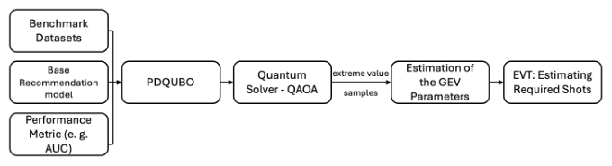

Estimating Quantum Execution Requirements for Feature Selection in Recommender Systems Using Extreme Value Theory (基于极值理论估计推荐系统特征选择的量子执行需求)
- 会议/期刊: RecSys 2025 (Short Paper Track)
- 作者与机构: Jiayang Niu, Qihan Zou, Jie Li, Ke Deng, Mark Sanderson, Yongli Ren (RMIT University / University of Melbourne)
- 推荐链路定位: 召回（特征选择阶段，服务于 CTR 预估前端）
- 研究方向: 协同过滤与双塔召回 / 工业架构与可信评测
- 论文原文: https://arxiv.org/abs/2507.03229v2
- 开源代码: https://github.com/jiayangniu/Recsys25_QEVT
TL;DR (1分钟核心速览)
现有量子辅助推荐的特征选择工作（CQFS/PDQUBO 等）只报告"效果与效率"，却回避了量子测量本质上是概率采样这一事实：固定问题规模下究竟要跑多少次（shots）才能稳定拿到不劣于经典基线的解，无人回答。本文提出 Q-EVT，把 QAOA 求解 QUBO 的重复执行输出视为极值样本，用 GEV 分布拟合最低能量，再反解出达到 95%/90% 置信度所需的执行次数。在 Avazu/Criteo 上，模拟器与两块真实 QPU（Ankaa-3、Forte）的估计值与 1000 次独立实测的交叉点几乎重合于 \(\delta\approx 0\)，验证了估计的准确性。
Background & Motivation (背景与核心矛盾)
- 主流范式: 将推荐特征选择写成带基数约束的 QUBO，交由量子退火器（D-Wave）或门控量子设备上的 QAOA 求解，以能量 \(Y=\mathbf{x}^\top Q\mathbf{x}+(\sum_i x_i-k)^2\) 作为特征子集质量的代理。
- 前人局限: 其一，量子测量天然概率化，单次 shot 只吐一个候选解，但既有工作从不回答"要跑多少次"；其二，PDQUBO 已观察到退火器随问题规模增大而性能退化，硬件噪声（如新一代 D-Wave 噪声更高）被系统性忽略。
- 核心洞察 (Key Insight): 我们真正关心的是"多次执行中的最低能量"这一极端统计量，而极值理论（EVT）恰好为块最小值提供了收敛到 GEV 分布的理论保证，因此执行次数可以被"算"出来而非"试"出来。
- 本文切入点: 用 GEV 拟合量子能量下尾，给定经典 SA 参考能量 \(y_{\text{ideal}}\)，反解满足置信度\(\alpha\) 的最小执行次数。
Method (核心方法设计)
1. 整体框架 (Overall Architecture)
Q-EVT 的闭环为：先用 DeepFM 的 AUC 变化按 PDQUBO 方式构造 QUBO 矩阵 \(Q\)（对角为单特征移除损失、非对角为成对移除损失），经 Ising 变换后交由\(p=3\)层 QAOA + COBYLA 优化；每次执行取块内最小能量作为一个极值样本，累积足够样本后拟合 GEV，再由拟合分布算出单次执行达标概率\(p\)，最终输出置信度化的执行次数估计。整个流程的关键在于"样本量够不够"与"离散能量能否喂给连续分布假设"两个工程障碍，分别由 4.2 与 4.3 解决。
flowchart TD
A["DeepFM + PDQUBO 构造 Q 矩阵"] --> B["Ising 变换 → QAOA(p=3) 执行"]
B --> C["块最小值极值样本 + 均匀噪声平滑"]
C --> D["GEV 拟合 (μ,σ,ξ)"]
D --> E["反解 n_EVT = log(1-α)/log(1-p)"]
2. 关键设计拆解 (Key Designs)
- 最小充分极值样本量估计（Algorithm 1）：GEV 参数估计需要足量极值样本，但量子执行昂贵，样本量本身是个待定超参。作者从大规模模拟池 \(Y_{\text{sim}}\)中自助重采样，对候选样本量\(n\)重复估计 GEV 参数，用 Hotelling's\(T^2\)检验参数均值一致性与多元 Shapiro-Wilk 检验正态性，取两个\(p\)值均超过 0.05 的最小\(n\)作为\(n_{\text{estimate}}\)（实测阈值 70–80，保守取 200）。直觉是：参数估计进入"稳定平台"的最早点即为性价比最优点。
- 离散能量到连续分布的平滑：QAOA 能量取值离散，而 EVT 假设连续分布，直接拟合会导致分布塌缩为点质量。作者对每个能量加均匀噪声 \(\tilde{y}_i=y_i+\epsilon_i,\ \epsilon_i\sim\mathcal{U}(-\delta/2,\delta/2)\)，其中\(\delta\) 取排序后相邻唯一能量的最小非零差。这一步等价于用核密度式的抖动把离散原子"抹开"，使 GEV 的尾部拟合在数学上成立。
- 执行次数反解与训练/推理开销：设单次执行达标概率 \(p=\mathbb{P}(y\le y_{\text{ideal}})\)由拟合 GEV 给出，则\(1-(1-p)^{n_{\text{EVT}}}\ge\alpha\)给出\(n_{\text{EVT}}\ge\log(1-\alpha)/\log(1-p)\)，总 shot 数为\(n_{\text{EVT}}\times s\)。该式无需额外训练，仅需一次 GEV 拟合（200 个极值样本），推理侧开销可忽略；真正的成本在采集极值样本的量子执行本身。
Experimental Setup & Evaluation Protocol (实验设置与评估协议)
- 数据集与预处理: 两个标准 CTR 数据集，特征子集规模受硬件比特数限制取 10/13/15/18；特征按 XGBoost 重要性保留 top-3 与 bottom-2，其余按重要性分组采样以保证多样性；基数约束 \(k\) 对应设为 8/11/12/14。
| 数据集 | 特征子集规模 | 基数约束 k | 场景说明 |
|---|---|---|---|
| Avazu | 10 / 13 / 15 / 18 | 8 / 11 / 12 / 14 | CTR 预估，Q 矩阵由 DeepFM 构造 |
| Criteo | 10 / 13 / 15 / 18 | 8 / 11 / 12 / 14 | 同上 |
- 数据划分与防穿越: 本文不涉及序列/时间切分，评估对象是 QUBO 求解质量而非推荐精度；Q 矩阵由 DeepFM 在训练集上训练后计算 AUC 变化得到。
- 排名评测协议: 非排名评测。核心指标为能量值（越低越好），以经典模拟退火 SA 的能量作为参考基线 \(y_{\text{ideal}}\)，统计"最小能量 ≤ SA"的经验比例。
- 对比基线与超参设置: 基线为经典 SA；量子侧为 AWS Braket 上的理想模拟器、超导 QPU Ankaa-3、离子阱 QPU Forte Enterprise 1；QAOA 深度 \(p=3\)，COBYLA 优化，参数先在模拟器上调优再迁移至真机；真机统一 2000 shots，模拟器扫描 500/1000/2000 shots。
Key Experimental Results (实验关键数据)
1. 主实验对比 (Main Results)
下表为达到/超越经典 SA 所需的执行次数 \(n_{\text{EVT}}\)（95%/90% 置信度），括号内为对应平台：
| 平台 | 规模 | Avazu (500 shots) | Criteo (500 shots) |
|---|---|---|---|
| Ankaa-3 模拟器 | 10 | 7 / 6 | 6 / 5 |
| Ankaa-3 模拟器 | 13 | 23 / 16 | 15 / 12 |
| Ankaa-3 模拟器 | 15 | 62 / 47 | 62 / 48 |
| Forte 模拟器 | 15 | 103 / 80 | 70 / 54 |
| Ankaa-3 真机 | 10 | 16 / 13 | 23 / 17 |
| Ankaa-3 真机 | 15 | 76 / 58 | 114 / 88 |
| Forte 真机 | 15 | 111 / 87 | 209 / 161 |
shot 预算对执行次数的影响（Avazu, 规模 13, Ankaa-3 模拟器）：500/1000/2000 shots 分别需 23/13/8 次执行，呈单调下降。
2. 消融实验 (Ablation Study)
本文为短论文，未设传统模块消融，但通过"估计值 vs 实测值"的校准实验构成等价验证：
| 验证设置 | 观测交叉点 \(\delta\) | 结论 |
|---|---|---|
| Avazu, 500 shots | \(\approx 0\) | 估计精准 |
| Avazu, 2000 shots | \(\approx 0\) | 估计精准 |
| Criteo, 500 shots | \(\approx 0\) | 估计精准 |
| Criteo, 1000 shots | 略偏离 0（散布稍大） | 仍稳健 |
| 真机 Ankaa-3, 规模 13/15 | shot 增至 ~10000 后收敛至 SA | 趋势一致 |
3. 关键实验发现 (Key Findings)
- 规模是主导成本因子：Avazu 上 Ankaa-3 模拟器从规模 10 到 15，95% 置信所需执行次数由 7 增至 62（近 9 倍），说明 QUBO 规模扩张带来的不仅是比特数压力，更是采样成本的指数式抬升。
- 真机噪声代价可量化：Criteo 规模 15、500 shots 下，模拟器需 62 次而物理 Ankaa-3 需 114 次，约 1.8 倍差距，直接量化了硬件不完美性对采样预算的侵蚀。
- shot 预算与执行次数可互换：Avazu 规模 13 上 500→2000 shots 使执行次数从 23 降到 8，且各配置独立采样仍保持单调，说明 EVT 估计在不同 shot 预算下自洽，可作为调度量子资源的可靠依据。
Highlights & Limitations (亮点、对比与审稿批判)
- 与代表作对比 (vs. Prior Work): CQFS/MIQUBO/QUBO-Boosting 关注如何构造 \(Q\) 矩阵，PDQUBO 引入反事实分析但仅定性指出退火器规模退化；本文首次把"要跑多少次"从经验试错升级为带置信度的统计推断，且首次将门控量子设备（QAOA）而非退火器用于推荐特征选择。
- 可迁移亮点: ①"块极值 + GEV 反解样本量"的范式可迁移到任何高方差、单次采样昂贵的评估场景（如大规模在线 A/B 的最小样本量预估、LLM 采样的置信度控制）；②自助重采样 + 双统计检验确定最小充分样本量的流程，是超参选择的一个通用模板。
- 审稿级局限批判: ①实验仅覆盖至 18 个特征、\(p=3\) 的浅层 QAOA，规模外推性存疑，且作者自承在"输出恒定最优"或"长期次优"两种情形下 EVT 会失效；②全文以能量对齐 SA 为唯一成功判据，缺少下游 CTR/AUC 的端到端验证，量子解相对经典解的实际推荐收益未被量化。
Rating (四维评分)
- 方法创新性 (Novelty): ⭐⭐⭐⭐ （首次将 EVT 引入量子推荐特征选择的资源估计，问题提法本身比解法更有价值）
- 评估协议与实验扎实度 (Protocol & Experiments): ⭐⭐⭐ （模拟器+两块真机+1000 次独立校准较扎实，但规模小、缺下游指标）
- 写作与数学规范度 (Clarity & Rigor): ⭐⭐⭐⭐ （GEV 与反解公式推导清晰，Algorithm 1 完整，短论文篇幅内信息密度高）
- 工业落地与复现价值 (Industrial & Practical Value): ⭐⭐⭐ （代码开源，但当前量子硬件规模与成本离工业推荐特征选择仍有距离）